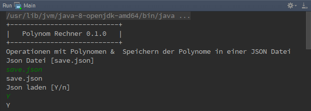

Wizard Modus¶
Bedienung¶
Der Wizard Modus wird nur am Start des Programmes ausgeführt und dient zum Initialesieren des Polynoms Array, Json Datei zu bestimmen und bei bedarf Polynome aus dieser Datei zu laden und zur späteren Verwendung auf zu bereiten.
Nach dem start wird als erstes der Name und die Version des Programmes angezegt. Anschließend wird abgefragt welche Json Datei zum sichern und laden der Polynome verwendet werden soll und anschließend ob diese Datei geladen werden wird.
Die Aussagen die in den Eckigen Klammern stehen sind die Standartwerte, die verwendet werden sobald der User nur Enter drückt, ohne eine weitere Eingabe zu tätigen.
Die eingaben in dem Bild wird mit grüner Schrift dargestellt. Die Eingabe bedeutet in diesem Beispiel das die Json Datei save.json verwendet werden soll um die Polynome zu sichern und mit dem folgenden Y lädt das Programm die Polynome die in save.json hinterlegt sind.
In diesem Beispiel wäre es kein unterschied ob der User 2 mal einfach nur Enter gedrückt hatte oder eine vollstänge Eingabe getätigt hatte, da die Standart werde eingeben wurden.